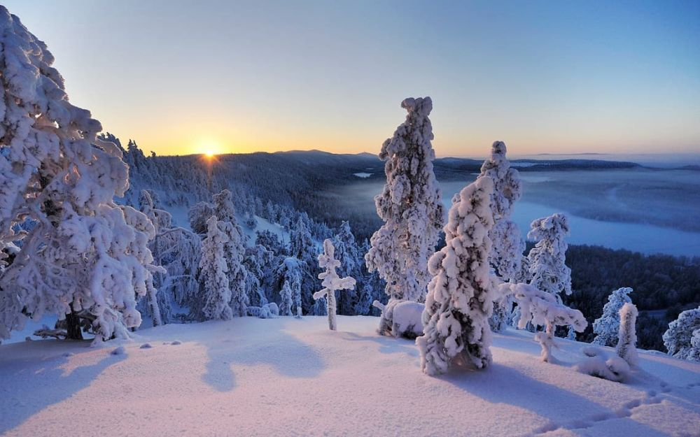

Descoperă Ruka-Kuusamo - Aventuri în peisajele naturale ale Finlandei
Stațiunea Ruka-Kuusamo oferă o gamă diversă de atracții captivante pentru vizitatori:
-

Stațiunea de schi Ruka - Paradisul iubitorilor de schi
Ruka este renumită pentru pârtiile de schi bine întreținute și variate, potrivite pentru toate nivelele de experiență.
-

Râul Ounasjoki - Pescuit și aventură
Încercați pescuitul la râul Ounasjoki sau explorați zonele naturale de lângă râu într-o aventură de neuitat.
-

Cascadele Kiutaköngäs - Farmec natural
Aceste cascade pitorești sunt un loc minunat pentru drumeții relaxante și fotografii frumoase.
-

Cascada Ounaskoski - Bijuterie ascunsă
Vizitați această frumoasă cascadă în orașul Kuusamo pentru o experiență liniștitoare în natură.
-

Drumeții în Ruka-Kuusamo - Explorare activă
Explorează traseele de drumeții care trec prin peisaje naturale spectaculoase și păduri pitorești.
Concluzii
Ruka-Kuusamo oferă o combinație perfectă de aventură în aer liber, sporturi de iarnă și peisaje naturale nordice.